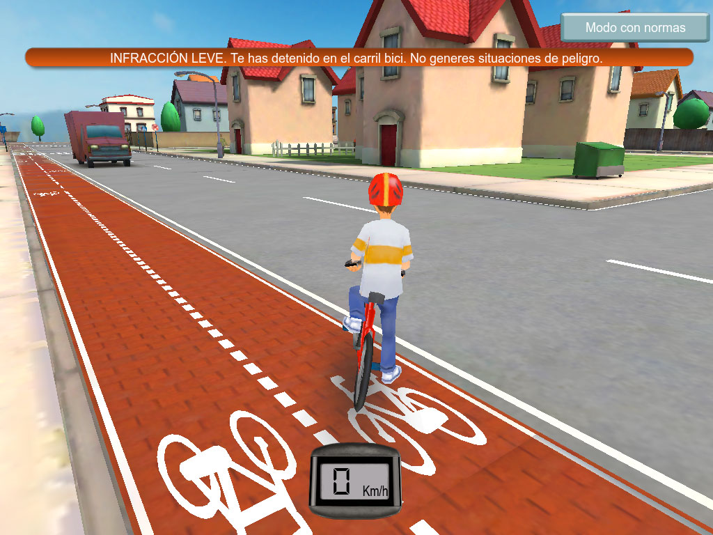
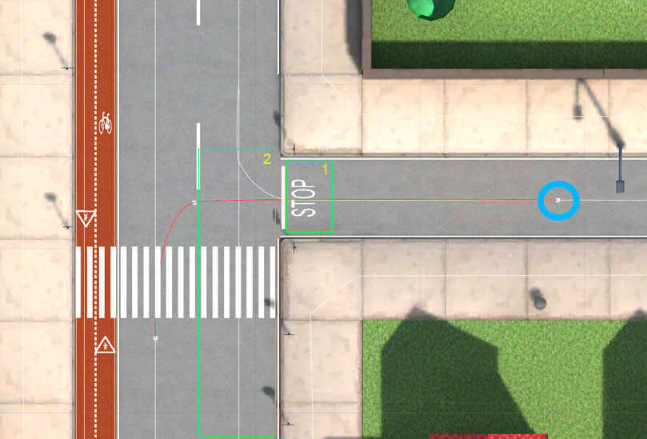

OVERVIEW
Biko is a set of two games to teach students of different ages how to drive a vehicle on the road. These games were created in 2 months by a 1+1 team (one programmer and one artist) using unity, and the target platform was an iPad 1.
The first game teaches students from 14 to 16 years the traffic signals and rules to drive a motorbike through the city. The second game teaches young students from 10 to 12 years how to ride a bike safely through the city.
TRAFFIC SYSTEM AND TRAFFIC SIGNALS
This game has a simple traffic system. Streets paths are defined as beziers curves. The vehicles check constantly if exist any obstacles in front of it. If the obstacle is far, the vehicle decreases its speed. When the obstacle is very close, the vehicle will stop. A curve point could have connections with other paths and some extra information. For example, in the image below:
In the point surrounded by a blue circle, the vehicle can choose to follow the left way (curve in red) or the right way (in white). The conditions to choose one or other are:
Green volumes (marked as 1 and 2) define a stop signal. When a vehicle enters volume 1, it stops completely and it will be stopped while there are other vehicles in volume 2. The rest of the signals works in the same way. On volume define the signal zone, and any number of volumes define "listeners" zones to check if there is something inside (others vehicles or pedestrians).